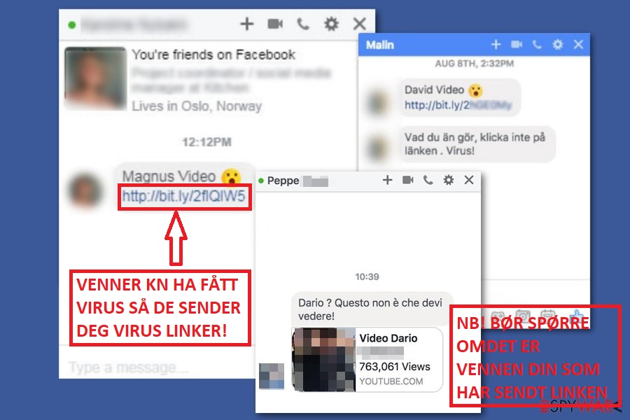

-

-
<<<<<<< HEAD
Hva er en orm:
- - Orm er en datakode som sprer seg i datamaskinen uten at bruker gjør noe spesielt
- - Ormen gjør skade på OS, nettverk og e-postmeldinger. Ormen er ikke alltid ødeleggende for datamaskinen, men påvirker datamaskinen og nettverkes ytelse.
- - Du kan få en orm gjennom ett epost vedlegg
- Datavirus er programvare som spres i datamaskinen som forstyrrer dens drift. Viruset kan ødelegge eller slette data/informasjon på din data. Viruset spres oftest gjennom vedlegg i epost eller direkte meldinger. Dirkete meldinger kan være over sosiale medier som Facebook eller vanlige SMS meldinger.
-
Hva er en orm:
- Orm er en datakode som sprer seg i datamaskinen uten at bruker gjør noe spesielt. Ormen gjør vanlig vis skade på operativsystem, nettverk og e-postmeldinger. Ormen er ikke alltid ødeleggende for datamaskinen, men påvirker datamaskinen og nettverkes ytelse. Ormer er vanligst å få gjennom epostvedlegg eller linker på nettsider
-
Hva er en trojansk hest:
<<<<<<< HEAD
- - En trojansk hest skjuler seg i et annet program som er troverdig, men når du laster ned det programmet skjuler det seg et annet program.
- - Trojanske hesten sprer seg somregel ikke av seg selv, men av virus, ormer eller nedlastet programvare
- En trojansk hest skjuler seg i et annet program som er troverdig, men når du laster ned det programmet skjuler det seg et annet program som er ødeleggende for datamaskinen. Trojanske hesten sprer seg somregel ikke av seg selv, men av virus, ormer eller nedlastet programvare
-
Falskt antivirusprogram
<<<<<<< HEAD
- - Ett falsk antivirus program sier at du har virus på data-en uten at du har det, og får deg til å laste ned eller kjøpe et produkt som “skal” fjerne viruset.
- - Falske antivirus program kan hindre deg i å åpne nettleseren din eller vise ekte og viktige Windows filer som infeksjoner.
- Ett falsk antivirus program sier at du har virus på data-en uten at du har det, og får deg til å laste ned eller kjøpe et produkt som “skal” fjerne viruset. Falske antivirus program kan hindre deg i å åpne nettleseren din eller vise ekte og viktige Windows filer som infeksjoner.
=======
Hva er Virus
>>>>>>> 4c978cd2cce1728c2ff2a2833c13b9eabae1d0d2
=======
>>>>>>> 4c978cd2cce1728c2ff2a2833c13b9eabae1d0d2